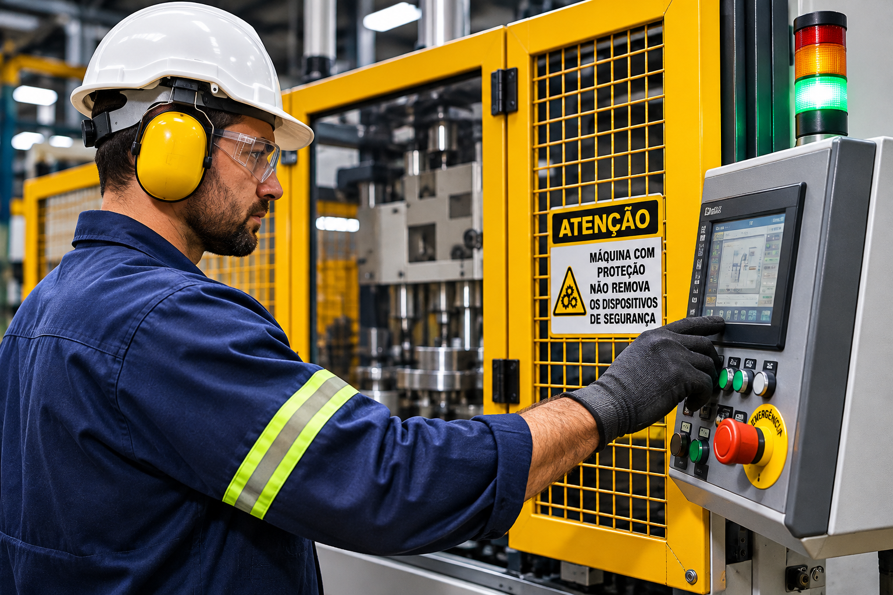
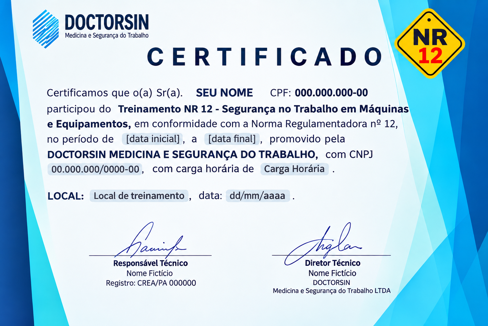

PÚBLICO-ALVO
Operadores e profissionais envolvidos
Destinado aos trabalhadores envolvidos na operação, manutenção, inspeção e demais intervenções em máquinas e equipamentos.
Capacitação voltada à prevenção de acidentes e à utilização segura de máquinas e equipamentos, conforme os requisitos da Norma Regulamentadora nº 12, contribuindo para ambientes de trabalho mais seguros.

Treinamento voltado à preparação dos trabalhadores para a operação segura, manutenção, inspeção e demais intervenções em máquinas e equipamentos, considerando os riscos existentes e as medidas de proteção necessárias.
Destinado aos trabalhadores envolvidos na operação, manutenção, inspeção e demais intervenções em máquinas e equipamentos.
Desenvolver conhecimentos e habilidades para reconhecer riscos, utilizar proteções e executar atividades de maneira segura.
Definida pelo empregador conforme os riscos, as características das máquinas e as atividades, garantindo a execução segura do trabalho.
Capacitação com etapas teórica e prática, incluindo atividades supervisionadas e compatíveis com a máquina ou equipamento utilizado pelo trabalhador.
A capacitação considera os riscos associados a cada máquina e equipamento, o funcionamento dos dispositivos de proteção e os procedimentos necessários para uma operação segura. A etapa prática deve ser supervisionada e documentada, conforme os requisitos da NR12.
Fale com a SHAMMAR e solicite uma proposta para o treinamento NR12.
Conheça os principais temas abordados na capacitação para operação segura de máquinas e equipamentos, com foco na identificação de riscos, utilização das proteções e prevenção de acidentes.
Identificação dos perigos existentes em cada máquina e conhecimento das proteções específicas contra os riscos.
Conhecimento do funcionamento das proteções e dos procedimentos necessários para utilizá-las corretamente.
Aplicação dos princípios de segurança durante a utilização das máquinas e equipamentos no ambiente de trabalho.
Orientações para a realização das atividades de forma segura, seguindo os procedimentos e as permissões de trabalho aplicáveis.
Procedimentos para impedir o funcionamento inesperado das máquinas durante atividades de inspeção, limpeza, lubrificação e manutenção.
Conteúdos adicionais previstos no Anexo II para capacitação de operadores de máquinas automotrizes ou autopropelidas.
O conteúdo e as atividades práticas devem considerar os riscos de cada máquina ou equipamento e as funções desempenhadas pelo trabalhador. A etapa prática deve ser supervisionada e documentada, conforme os requisitos da NR12.
A capacitação NR12 considera os requisitos legais e técnicos relacionados à segurança no trabalho em máquinas e equipamentos, observando as normas regulamentadoras e referências técnicas aplicáveis.
Estabelece referências técnicas, princípios fundamentais e medidas de proteção para preservar a saúde e a integridade física dos trabalhadores, prevenindo acidentes e doenças relacionados às máquinas e equipamentos.
Apresenta disposições gerais de Segurança e Saúde no Trabalho e requisitos relacionados ao gerenciamento de riscos ocupacionais, incluindo aspectos de capacitação dos trabalhadores.
Estabelece os requisitos para seleção, fornecimento, utilização, conservação e responsabilidades relacionadas aos equipamentos de proteção individual utilizados pelos trabalhadores.
Referências técnicas nacionais e internacionais aplicáveis à apreciação de riscos, sistemas de segurança, dispositivos de proteção e requisitos de projeto e utilização de máquinas.
As Normas Regulamentadoras e as normas técnicas podem ser atualizadas por atos posteriores. A aplicação de cada referência deve considerar o tipo de máquina, os riscos existentes e os requisitos legais pertinentes.
O treinamento NR12 combina conhecimentos teóricos e atividades práticas para preparar os trabalhadores a reconhecer riscos, utilizar corretamente os sistemas de proteção e realizar suas atividades com segurança.
Apresentação dos riscos associados às máquinas e equipamentos, funcionamento das proteções, princípios de segurança, métodos de trabalho e procedimentos para prevenir acidentes.
Aplicação dos conhecimentos em atividades práticas relacionadas à máquina ou equipamento, incluindo reconhecimento das proteções, operação segura e procedimentos de trabalho.
Verificação do aprendizado e das competências necessárias para a execução segura das atividades, conforme os critérios estabelecidos para a capacitação.
A capacitação deve ser compatível com as funções desempenhadas e os riscos aos quais o trabalhador está exposto. Deve ocorrer antes de assumir a função, sem custos para o trabalhador e durante o horário normal de trabalho, respeitando os requisitos da NR12.
Após o cumprimento das etapas previstas no treinamento, o participante recebe o certificado correspondente à capacitação realizada em Segurança no Trabalho em Máquinas e Equipamentos.
O certificado documenta a capacitação realizada pelo trabalhador, reunindo informações sobre o treinamento e a preparação recebida para atuar com segurança em máquinas e equipamentos.
A emissão do certificado ocorre após o cumprimento das etapas e dos requisitos previstos para a capacitação. As informações registradas devem corresponder ao treinamento efetivamente realizado.

Modelo ilustrativo do certificado NR12